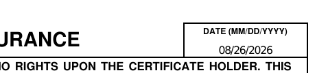
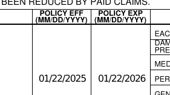

A certificate of insurance is a legal attestation people rely on. One wrong value — a date, a limit, a checked box — is a liability the issuing agency owns. Below: a real client file, one real example of what can go wrong, and a verification layer you can run yourself, live.
A small insurance agency (Bayline Insurance Services) and its records for one commercial customer, Paws and Provisions LLC. Everything the AI is allowed to use comes from the customer's policy, the request it's answering, and the agency's own settings — the three sources below. Nothing else.
The official summary of a business's coverage: which protections they carry, the dollar limits (the most the insurer will pay), and from when until when the coverage runs. This policy carries general-liability coverage — but no add-ons (“endorsements”) that would extend that coverage to anyone else, and no cyber coverage.
A general contractor, Acme, won't let Paws and Provisions work on its site without proof of insurance. Acme asks for a certificate — and wants to be named as “additional insured” with a “waiver of subrogation,” two legal protections that only exist if the policy actually carries the matching endorsements. This one doesn't. Hold onto that — it's the exact thing the stress test at the end puts to the test.
The issuing agency's fixed details — its name, address, phone, and producer code — that belong on every certificate it puts out. These come from the agency's account settings, not from the customer's file, and the layer treats them as a source like any other.
A certificate of insurance is one page an insured business hands to a client or landlord as proof of coverage. Whoever receives it relies on the dollar amounts, the dates, and the checked boxes to be true — they let the business onto the job on the strength of that paper. If a value is wrong, the party relying on it is exposed, and the agency that issued it is liable.
We asked GailGPT for a certificate against a policy whose coverage ran 01/22/2025 – 01/22/2026. Here is the actual document it produced — look at the two dates together:


A certificate dated 08/26/2026, attesting coverage that ended 01/22/2026 — seven months earlier. The one thing this document exists to prove is that coverage is in force on the date it's issued, and this one fails that test on its own face. Nothing in the pipeline checked. Handed to a contractor, this paper says a business is insured. It isn't.
Language models generate plausible documents; they don't guarantee that every value traces to the source file, or that the finished document satisfies the rules a human desk would check — like whether the coverage is actually in force. Most runs come out fine. But in an industry where the mistakes are expensive — where a certificate is relied on, litigated over, and owned by the agency that issued it — "usually fine" isn't a control. Grounding has to be structural: every value pinned to a sentence in the source, every document validated by code that runs the same way every time, and anything that fails stopped before it ships. That's the layer below — and it blocks this exact certificate. Run it.
The model may only propose a value with the exact sentence from the source that supports it; deterministic code verifies the quote, runs the checks a human desk would run, and makes the final call. The layer approves a certificate when the policy backs everything on it — and stops the ones that should never ship: the expired policy from Step 2, and unsupported values forced straight into the checker. Every run ends with a finished document and a receipt for every value on it.
The source documents the demo runs on: the policy ↗ · the certificate request ↗
The two live options call the real models with the file above. “Saved run” replays a recorded real run and needs no API — it's also what the system automatically falls back to (clearly labeled) if a live model call fails mid-run. Server hiccups (Google 503s) are shown, not hidden.
An unsupported value has no real sentence to point to, so it can't reach the form — on any model, however confident. A certificate on lapsed coverage is stopped with the reason printed on it, not shipped with a buried note. And the finished document carries a receipt for every value: which source, which sentence — the audit trail an expensive-mistake industry needs. It outputs the same data format Gail's certificate skill already consumes, so it's not a replacement for anything you've built — it's the grounding layer in front of it.